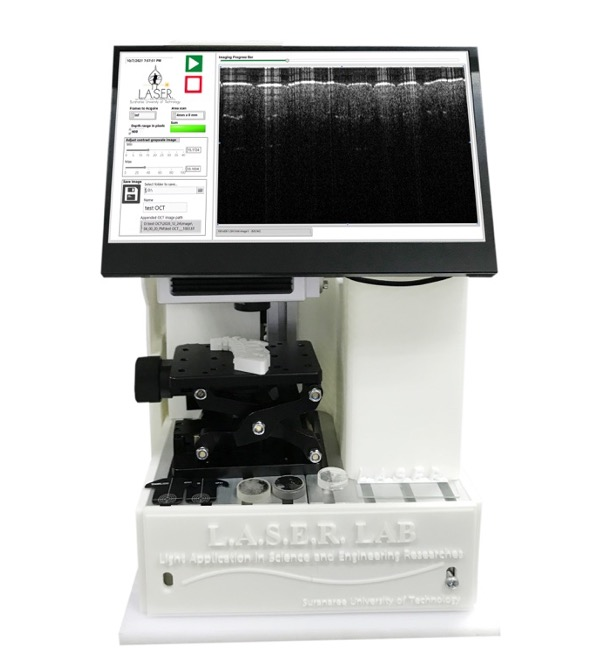
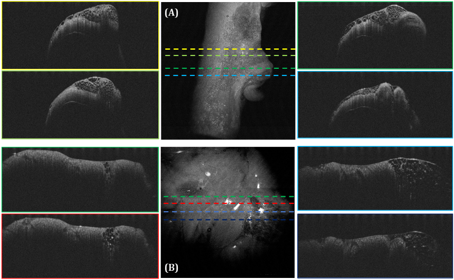
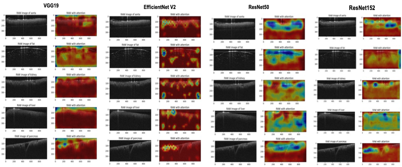
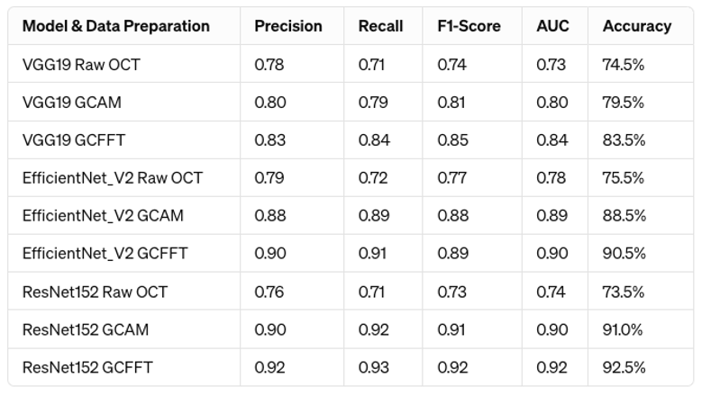
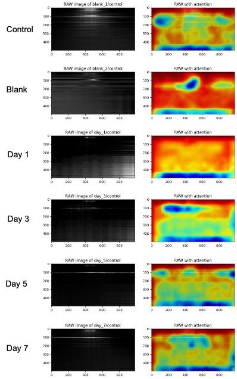
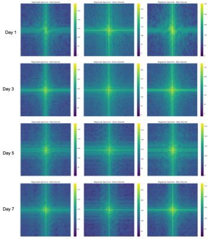

<!DOCTYPE html>
<html lang="en">
<head>
    <meta charset="UTF-8">
    <meta name="viewport" content="width=device-width, initial-scale=1.0">
    <title>From Pixels to Prognosis: Bridging Advanced AI and Biomedical Imaging</title>
    <!-- 
    INSTRUCTIONS FOR ADDING YOUR OWN IMAGES:
    
    1. Extract images from your documents (Word/PDF) and save them in the 'images' folder
    2. Replace the animated visual elements with actual images by:
       - Change <div class="image-container"> sections
       - Replace with: 
    3. Sample images are provided in the images/ folder as SVG examples
    4. Recommended image formats: JPG, PNG, SVG
    5. Optimal image sizes: 800x600px for main visuals, 400x300px for smaller elements
    
    Key images to replace:
    - Neural network diagram (Slide 1)
    - OCT vs Fundus comparison (Slide 3)  
    - AI evolution timeline (Slide 4)
    - OCT processing pipeline (Slide 5)
    - Performance charts (Slide 6)
    - Foundation model architecture (Slide 7)
    -->
    <style>
        * {
            margin: 0;
            padding: 0;
            box-sizing: border-box;
        }

        body {
            font-family: 'Segoe UI', Tahoma, Geneva, Verdana, sans-serif;
            background: linear-gradient(135deg, #667eea 0%, #764ba2 100%);
            color: #333;
            overflow: hidden;
        }

        .slide-container {
            width: 100vw;
            height: 100vh;
            display: flex;
            align-items: center;
            justify-content: center;
            position: relative;
        }

        .slide {
            width: 90%;
            max-width: 1200px;
            height: 90vh;
            background: white;
            border-radius: 20px;
            box-shadow: 0 20px 40px rgba(0, 0, 0, 0.2);
            padding: 60px;
            display: none;
            flex-direction: column;
            justify-content: space-between;
            position: relative;
            overflow: hidden;
        }

        .slide.active {
            display: flex;
            animation: slideIn 0.6s ease-out;
        }

        @keyframes slideIn {
            from {
                opacity: 0;
                transform: translateX(50px);
            }
            to {
                opacity: 1;
                transform: translateX(0);
            }
        }

        .slide::before {
            content: '';
            position: absolute;
            top: 0;
            left: 0;
            right: 0;
            height: 8px;
            background: linear-gradient(90deg, #4CAF50, #2196F3, #FF9800);
        }

        h1 {
            font-size: 3.2em;
            font-weight: 700;
            color: #2c3e50;
            margin-bottom: 30px;
            text-align: center;
            line-height: 1.2;
        }

        h2 {
            font-size: 2.8em;
            font-weight: 600;
            color: #34495e;
            margin-bottom: 40px;
            text-align: center;
            border-bottom: 3px solid #3498db;
            padding-bottom: 15px;
        }

        h3 {
            font-size: 2.2em;
            font-weight: 600;
            color: #2980b9;
            margin-bottom: 25px;
        }

        .subtitle {
            font-size: 1.8em;
            color: #7f8c8d;
            margin-bottom: 40px;
            text-align: center;
            font-weight: 300;
        }

        .presenter-info {
            text-align: center;
            font-size: 1.4em;
            color: #34495e;
            margin: 30px 0;
        }

        .date {
            text-align: center;
            font-size: 1.2em;
            color: #95a5a6;
            margin-bottom: 40px;
        }

        .content {
            flex-grow: 1;
            display: flex;
            flex-direction: column;
            justify-content: center;
        }

        .bullet-points {
            list-style: none;
            padding: 0;
        }

        .bullet-points li {
            font-size: 1.4em;
            margin-bottom: 25px;
            padding-left: 40px;
            position: relative;
            line-height: 1.6;
            color: #2c3e50;
        }

        .bullet-points li::before {
            content: '▶';
            position: absolute;
            left: 0;
            color: #3498db;
            font-size: 1.2em;
        }

        .sub-bullets {
            margin-top: 15px;
            margin-left: 30px;
        }

        .sub-bullets li {
            font-size: 1.2em;
            margin-bottom: 12px;
            color: #555;
        }

        .sub-bullets li::before {
            content: '•';
            color: #e74c3c;
        }

        .highlight-box {
            background: linear-gradient(135deg, #74b9ff, #0984e3);
            color: white;
            padding: 30px;
            border-radius: 15px;
            margin: 30px 0;
            box-shadow: 0 10px 20px rgba(0, 0, 0, 0.1);
        }

        .highlight-box h3 {
            color: white;
            margin-bottom: 20px;
        }

        .two-column {
            display: grid;
            grid-template-columns: 1fr 1fr;
            gap: 40px;
            margin: 30px 0;
        }

        .visual-placeholder {
            background: linear-gradient(135deg, #ddd, #bbb);
            height: 300px;
            border-radius: 15px;
            display: flex;
            align-items: center;
            justify-content: center;
            font-size: 1.2em;
            color: #666;
            text-align: center;
            padding: 20px;
            margin: 20px 0;
            border: 3px dashed #999;
        }

        .image-container {
            background: white;
            border-radius: 15px;
            padding: 20px;
            margin: 20px 0;
            box-shadow: 0 10px 20px rgba(0, 0, 0, 0.1);
            text-align: center;
        }

        .image-container img {
            max-width: 100%;
            height: auto;
            border-radius: 10px;
            margin-bottom: 15px;
        }

        .image-caption {
            font-size: 1.1em;
            color: #555;
            font-style: italic;
            margin-top: 10px;
        }

        .neural-network-visual {
            background: linear-gradient(135deg, #667eea, #764ba2);
            height: 300px;
            border-radius: 15px;
            display: flex;
            flex-direction: column;
            align-items: center;
            justify-content: center;
            color: white;
            margin: 20px 0;
            position: relative;
            overflow: hidden;
        }

        .neural-network-visual::before {
            content: '';
            position: absolute;
            top: 0;
            left: 0;
            right: 0;
            bottom: 0;
            background: url('data:image/svg+xml,<svg xmlns="http://www.w3.org/2000/svg" viewBox="0 0 100 100"><circle cx="20" cy="20" r="3" fill="rgba(255,255,255,0.3)"/><circle cx="50" cy="30" r="3" fill="rgba(255,255,255,0.3)"/><circle cx="80" cy="25" r="3" fill="rgba(255,255,255,0.3)"/><circle cx="20" cy="50" r="3" fill="rgba(255,255,255,0.3)"/><circle cx="50" cy="60" r="3" fill="rgba(255,255,255,0.3)"/><circle cx="80" cy="55" r="3" fill="rgba(255,255,255,0.3)"/><circle cx="20" cy="80" r="3" fill="rgba(255,255,255,0.3)"/><circle cx="50" cy="90" r="3" fill="rgba(255,255,255,0.3)"/><circle cx="80" cy="85" r="3" fill="rgba(255,255,255,0.3)"/><line x1="20" y1="20" x2="50" y2="30" stroke="rgba(255,255,255,0.2)" stroke-width="1"/><line x1="20" y1="20" x2="50" y2="60" stroke="rgba(255,255,255,0.2)" stroke-width="1"/><line x1="50" y1="30" x2="80" y2="25" stroke="rgba(255,255,255,0.2)" stroke-width="1"/><line x1="50" y1="60" x2="80" y2="55" stroke="rgba(255,255,255,0.2)" stroke-width="1"/></svg>');
            background-size: 200px 200px;
            animation: networkFlow 10s infinite;
        }

        @keyframes networkFlow {
            0%, 100% { opacity: 0.3; }
            50% { opacity: 0.6; }
        }

        .oct-visual {
            background: linear-gradient(135deg, #74b9ff, #0984e3);
            height: 280px;
            border-radius: 15px;
            display: flex;
            flex-direction: column;
            align-items: center;
            justify-content: center;
            color: white;
            margin: 20px 0;
            position: relative;
        }

        .oct-layers {
            display: flex;
            flex-direction: column;
            gap: 8px;
            margin: 20px 0;
        }

        .oct-layer {
            height: 15px;
            background: rgba(255, 255, 255, 0.7);
            border-radius: 3px;
            animation: scanLine 3s infinite ease-in-out;
        }

        .oct-layer:nth-child(1) { width: 200px; animation-delay: 0s; }
        .oct-layer:nth-child(2) { width: 180px; animation-delay: 0.3s; }
        .oct-layer:nth-child(3) { width: 160px; animation-delay: 0.6s; }
        .oct-layer:nth-child(4) { width: 140px; animation-delay: 0.9s; }

        @keyframes scanLine {
            0%, 100% { opacity: 0.5; transform: scaleX(1); }
            50% { opacity: 1; transform: scaleX(1.1); }
        }

        .fundus-visual {
            background: radial-gradient(circle, #ff7675, #d63031);
            height: 280px;
            border-radius: 50%;
            display: flex;
            align-items: center;
            justify-content: center;
            color: white;
            margin: 20px 0;
            position: relative;
        }

        .optic-disc {
            width: 40px;
            height: 40px;
            background: rgba(255, 255, 255, 0.8);
            border-radius: 50%;
            position: absolute;
            top: 30%;
            right: 30%;
            animation: pulse 2s infinite;
        }

        .macula {
            width: 20px;
            height: 20px;
            background: rgba(255, 215, 0, 0.8);
            border-radius: 50%;
            position: absolute;
            top: 45%;
            left: 45%;
            animation: pulse 2s infinite 0.5s;
        }

        @keyframes pulse {
            0%, 100% { transform: scale(1); opacity: 0.7; }
            50% { transform: scale(1.2); opacity: 1; }
        }

        .performance-chart {
            background: white;
            border-radius: 15px;
            padding: 20px;
            margin: 20px 0;
            box-shadow: 0 5px 15px rgba(0, 0, 0, 0.1);
        }

        .bar-chart {
            display: flex;
            align-items: end;
            height: 200px;
            gap: 20px;
            margin: 20px 0;
        }

        .bar {
            background: linear-gradient(to top, #74b9ff, #0984e3);
            border-radius: 5px 5px 0 0;
            display: flex;
            flex-direction: column;
            align-items: center;
            flex: 1;
            color: white;
            font-weight: bold;
            position: relative;
        }

        .bar-value {
            position: absolute;
            top: -25px;
            color: #333;
            font-weight: bold;
        }

        .bar-label {
            margin-top: 10px;
            color: #333;
            font-size: 0.9em;
        }

        .confusion-matrix {
            display: grid;
            grid-template-columns: repeat(3, 1fr);
            gap: 5px;
            margin: 20px 0;
            max-width: 300px;
        }

        .matrix-cell {
            background: #f8f9fa;
            border: 2px solid #dee2e6;
            padding: 15px;
            text-align: center;
            font-weight: bold;
            border-radius: 5px;
        }

        .matrix-cell.high { background: #d4edda; border-color: #28a745; }
        .matrix-cell.medium { background: #fff3cd; border-color: #ffc107; }
        .matrix-cell.low { background: #f8d7da; border-color: #dc3545; }

        .pipeline {
            display: flex;
            align-items: center;
            justify-content: space-between;
            margin: 30px 0;
            padding: 20px;
            background: #f8f9fa;
            border-radius: 15px;
        }

        .pipeline-step {
            background: linear-gradient(135deg, #6c5ce7, #a29bfe);
            color: white;
            padding: 15px 20px;
            border-radius: 10px;
            font-weight: bold;
            text-align: center;
            flex: 1;
            margin: 0 10px;
        }

        .pipeline-arrow {
            font-size: 2em;
            color: #3498db;
            font-weight: bold;
        }

        .stats-grid {
            display: grid;
            grid-template-columns: repeat(3, 1fr);
            gap: 20px;
            margin: 30px 0;
        }

        .stat-box {
            background: white;
            border: 2px solid #3498db;
            padding: 20px;
            border-radius: 10px;
            text-align: center;
            box-shadow: 0 5px 15px rgba(0, 0, 0, 0.1);
        }

        .stat-number {
            font-size: 2.5em;
            font-weight: bold;
            color: #2980b9;
            display: block;
        }

        .stat-label {
            font-size: 1.1em;
            color: #555;
            margin-top: 10px;
        }

        .navigation {
            position: fixed;
            bottom: 30px;
            right: 30px;
            display: flex;
            gap: 15px;
        }

        .nav-btn {
            background: rgba(52, 73, 94, 0.8);
            color: white;
            border: none;
            padding: 15px 20px;
            border-radius: 50px;
            cursor: pointer;
            font-size: 1em;
            font-weight: bold;
            transition: all 0.3s ease;
        }

        .nav-btn:hover {
            background: #34495e;
            transform: translateY(-2px);
        }

        .slide-counter {
            position: fixed;
            bottom: 30px;
            left: 30px;
            background: rgba(52, 73, 94, 0.8);
            color: white;
            padding: 10px 20px;
            border-radius: 25px;
            font-weight: bold;
        }

        .challenge-impact {
            display: grid;
            grid-template-columns: 1fr 1fr;
            gap: 30px;
            margin: 20px 0;
        }

        .challenge, .opportunity {
            padding: 25px;
            border-radius: 15px;
            box-shadow: 0 5px 15px rgba(0, 0, 0, 0.1);
        }

        .challenge {
            background: linear-gradient(135deg, #ff7675, #d63031);
            color: white;
        }

        .opportunity {
            background: linear-gradient(135deg, #00b894, #00a085);
            color: white;
        }

        .timeline {
            display: flex;
            align-items: center;
            justify-content: space-between;
            margin: 30px 0;
            padding: 20px;
            background: #f8f9fa;
            border-radius: 15px;
        }

        .timeline-item {
            text-align: center;
            flex: 1;
            position: relative;
        }

        .timeline-item::after {
            content: '';
            position: absolute;
            top: 50%;
            right: -50%;
            width: 100%;
            height: 3px;
            background: #3498db;
            transform: translateY(-50%);
        }

        .timeline-item:last-child::after {
            display: none;
        }

        .timeline-icon {
            background: #3498db;
            color: white;
            width: 60px;
            height: 60px;
            border-radius: 50%;
            display: flex;
            align-items: center;
            justify-content: center;
            margin: 0 auto 15px;
            font-weight: bold;
        }

        .key-takeaways {
            background: linear-gradient(135deg, #55a3ff, #003d82);
            color: white;
            padding: 30px;
            border-radius: 15px;
            margin: 20px 0;
        }

        .key-takeaways h3 {
            color: white;
            margin-bottom: 20px;
        }

        .acknowledgments {
            text-align: center;
            background: #f8f9fa;
            padding: 30px;
            border-radius: 15px;
            margin-top: 30px;
        }

        .contact-info {
            font-size: 1.2em;
            color: #2980b9;
            font-weight: bold;
            margin-top: 20px;
        }

        @media (max-width: 768px) {
            .slide {
                padding: 30px;
                width: 95%;
            }
            
            h1 { font-size: 2.5em; }
            h2 { font-size: 2.2em; }
            h3 { font-size: 1.8em; }
            
            .bullet-points li {
                font-size: 1.2em;
            }
            
            .two-column {
                grid-template-columns: 1fr;
            }
            
            .stats-grid {
                grid-template-columns: 1fr;
            }
        }
</head>
<body>
    <div class="slide-container">
        <!-- Slide 1: Title Slide -->
        <div class="slide active">
            <div class="content">
                <h1>From Pixels to Prognosis</h1>
                <div class="subtitle">Bridging Advanced AI and Biomedical Imaging</div>
                <div class="subtitle" style="font-size: 1.4em; margin-top: -20px;">Leveraging Foundational Models for Custom OCT and Fundus Image Analysis</div>
                
                <div class="presenter-info">
                    <strong>Presenter:</strong> [Your Name] | [Your Lab/Institution]
                </div>
                
                <div class="date">August 14, 2025</div>
                
                <div class="neural-network-visual">
                    <div style="font-size: 2em; margin-bottom: 20px;">🧠 Neural Network Processing</div>
                    <div style="display: flex; align-items: center; gap: 30px;">
                        <div style="text-align: center;">
                            <div style="font-size: 3em;">🔬</div>
                            <div>3D OCT Cube</div>
                        </div>
                        <div style="font-size: 2em;">➔</div>
                        <div style="text-align: center;">
                            <div style="font-size: 3em;">⚙️</div>
                            <div>AI Processing</div>
                        </div>
                        <div style="font-size: 2em;">➔</div>
                        <div style="text-align: center;">
                            <div style="font-size: 3em;">👁️</div>
                            <div>2D Fundus</div>
                        </div>
                    </div>
                    <div style="margin-top: 20px; font-size: 1.5em;">⬇</div>
                    <div style="margin-top: 10px; font-size: 3em;">💡</div>
                    <div>Clinical Insight</div>
                </div>
            </div>
        </div>

        <!-- Slide 2: The Core Challenge & The Agenda -->
        <div class="slide">
            <h2>The Data-Rich, Information-Poor Problem in Medicine</h2>
            
            <div class="challenge-impact">
                <div class="challenge">
                    <h3>🚫 The Challenge</h3>
                    <p>Biomedical instruments generate massive, high-dimensional data. Manual interpretation is a bottleneck—it's slow, subjective, and can't scale.</p>
                </div>
                
                <div class="opportunity">
                    <h3>✅ The Opportunity</h3>
                    <p>Use advanced AI to automate analysis, uncover hidden patterns, and create predictive models for patient care.</p>
                </div>
            </div>

            <div class="highlight-box">
                <h3>📋 Today's Talk Agenda:</h3>
                <ul class="bullet-points" style="color: white;">
                    <li><strong>The Data:</strong> A CS perspective on OCT & Fundus data</li>
                    <li><strong>The AI Toolkit:</strong> From CNNs and GradCAM to Transformers</li>
                    <li><strong>Case Study 1:</strong> AI-Powered OCT for Tissue Diagnostics & Skin Analysis</li>
                    <li><strong>Case Study 2:</strong> End-to-End Diabetic Retinopathy Classification System</li>
                    <li><strong>The Future:</strong> Foundation Models & Integrated Clinical AI</li>
                </ul>
            </div>

            <div class="image-container">
                <div style="background: linear-gradient(135deg, #e17055, #81ecec); height: 200px; border-radius: 15px; display: flex; align-items: center; justify-content: center; color: white; font-size: 2em; position: relative; overflow: hidden;">
                    <div style="position: absolute; top: 20px; left: 20px; font-size: 4em;">📊</div>
                    <div style="position: absolute; bottom: 20px; right: 20px; font-size: 3em;">⚡</div>
                    <div style="text-align: center;">
                        <div style="font-size: 1.5em; margin-bottom: 10px;">Data Funnel</div>
                        <div style="font-size: 1em;">Petabytes → Knowledge</div>
                    </div>
                </div>
                <div class="image-caption">Funnel Diagram: Transforming massive biomedical data into actionable clinical decisions</div>
            </div>
        </div>

    <!-- Slide 3: A Computer Scientist's View of Ophthalmic Data -->
    <div class="slide-container">
        <div class="slide">
            <h2>Understanding the Input: Data Structures in Imaging</h2>
            
            <div class="two-column">
                <div>
                    <h3>🔬 Optical Coherence Tomography (OCT)</h3>
                    <ul class="bullet-points">
                        <li><strong>Data Structure:</strong> 3D Volumetric Data [width, height, depth]</li>
                        <li>Essentially a stack of 2D images (B-scans)</li>
                        <li><strong>Computational Challenge:</strong>
                            <ul class="sub-bullets">
                                <li>High dimensionality</li>
                                <li>Spatial correlation</li>
                                <li>Significant speckle noise</li>
                                <li>Requires 3D-aware algorithms</li>
                            </ul>
                        </li>
                    </ul>
                </div>
                
                <div>
                    <h3>👁️ Fundus Photography</h3>
                    <ul class="bullet-points">
                        <li><strong>Data Structure:</strong> High-Resolution 2D Image [width, height, channels]</li>
                        <li><strong>Computational Challenge:</strong>
                            <ul class="sub-bullets">
                                <li>Variability in illumination</li>
                                <li>Focus variations</li>
                                <li>Patient feature differences</li>
                                <li>Fine details (microaneurysms)</li>
                                <li>Global structures</li>
                            </ul>
                        </li>
                    </ul>
                </div>
            </div>

            <div class="two-column" style="margin-top: 40px;">
                <div class="image-container">
                    <div class="oct-visual">
                        <div style="font-size: 1.5em; margin-bottom: 15px;">OCT 3D Volume</div>
                        <div class="oct-layers">
                            <div class="oct-layer"></div>
                            <div class="oct-layer"></div>
                            <div class="oct-layer"></div>
                            <div class="oct-layer"></div>
                        </div>
                        <div style="font-size: 1em; margin-top: 15px;">B-scan Slices</div>
                    </div>
                    <div class="image-caption">Left: OCT Cube deconstructed into B-scan slices showing depth information</div>
                </div>
                
                <div class="image-container">
                    <div class="fundus-visual">
                        <div class="optic-disc"></div>
                        <div class="macula"></div>
                        <div style="font-size: 1.5em;">Fundus Image</div>
                        <div style="font-size: 0.8em; margin-top: 10px;">Optic Disc & Macula</div>
                    </div>
                    <div class="image-caption">Right: Fundus photo highlighting key anatomical features</div>
                </div>
            </div>
        </div>

    <!-- Slide 4: The AI Toolkit -->
    <div class="slide-container">
        <div class="slide">
            <h2>The Evolution of Models for Visual Understanding</h2>
            
            <div class="timeline">
                <div class="timeline-item">
                    <div class="timeline-icon">CNN</div>
                    <h4>Convolutional Neural Networks</h4>
                    <p>Segmentation (U-Net) & Classification (ResNet, VGG19)</p>
                </div>
                <div class="timeline-item">
                    <div class="timeline-icon">ViT</div>
                    <h4>Vision Transformers</h4>
                    <p>Global context modeling with attention (Swin Transformer)</p>
                </div>
                <div class="timeline-item">
                    <div class="timeline-icon">LLM</div>
                    <h4>Large Language Models</h4>
                    <p>Multimodal analysis and reasoning</p>
                </div>
            </div>

            <div class="highlight-box">
                <h3>🔍 Key AI Techniques:</h3>
                <ul class="bullet-points" style="color: white;">
                    <li><strong>CNNs:</strong> The workhorse for medical imaging - ideal for segmentation and classification</li>
                    <li><strong>GradCAM:</strong> Creates heatmaps showing where models look, enabling "virtual biomarkers"</li>
                    <li><strong>Vision Transformers:</strong> Apply attention mechanism to image patches for better global context</li>
                    <li><strong>Foundation Models:</strong> Pre-trained on vast datasets, moving from classification to rich descriptive analysis</li>
                </ul>
            </div>

            <div class="image-container">
                <div style="background: linear-gradient(135deg, #a29bfe, #6c5ce7); height: 200px; border-radius: 15px; display: flex; align-items: center; justify-content: space-around; color: white; padding: 20px;">
                    <div style="text-align: center;">
                        <div style="font-size: 3em; margin-bottom: 10px;">🔗</div>
                        <div style="font-size: 1.2em;">CNN + GradCAM</div>
                    </div>
                    <div style="font-size: 2em;">→</div>
                    <div style="text-align: center;">
                        <div style="font-size: 3em; margin-bottom: 10px;">🎯</div>
                        <div style="font-size: 1.2em;">Swin Transformer</div>
                    </div>
                    <div style="font-size: 2em;">→</div>
                    <div style="text-align: center;">
                        <div style="font-size: 3em; margin-bottom: 10px;">🤖</div>
                        <div style="font-size: 1.2em;">Multimodal LLM</div>
                    </div>
                </div>
                <div class="image-caption">Evolution of AI models: From specialized CNNs to general-purpose foundation models</div>
            </div>
        </div>
    </div>

    <!-- Slide 5: Case Study 1: OCT Analysis -->
    <div class="slide-container">
        <div class="slide">
            <h2>Case Study 1: AI-Powered OCT for Tissue Diagnostics</h2>
            
            <div class="highlight-box">
                <h3>🎯 The Task</h3>
                <p>Develop an AI pipeline to analyze complex 3D OCT data, from segmenting human skin to identifying biomarkers in animal tissue.</p>
            </div>

            <div class="pipeline">
                <div class="pipeline-step">Raw OCT Data</div>
                <div class="pipeline-arrow">→</div>
                <div class="pipeline-step">U-Net Segmentation</div>
                <div class="pipeline-arrow">→</div>
                <div class="pipeline-step">Image Flattening</div>
                <div class="pipeline-arrow">→</div>
                <div class="pipeline-step">GradCAM Analysis</div>
                <div class="pipeline-arrow">→</div>
                <div class="pipeline-step">Virtual Biomarkers</div>
            </div>

            <ul class="bullet-points">
                <li><strong>Segmentation:</strong> U-Net architecture automatically segments skin layers from OCT images</li>
                <li><strong>Image Flattening & Measurement:</strong> Segmented layer enables consistent skin thickness measurement</li>
                <li><strong>Virtual Biomarkers with GradCAM:</strong> ResNet152 + GradCAM highlights critical regions for tissue classification (aorta, liver, pancreas)</li>
            </ul>

            <div class="stats-grid">
                <div class="stat-box">
                    <span class="stat-number">100%</span>
                    <div class="stat-label">Automated Pipeline</div>
                </div>
                <div class="stat-box">
                    <span class="stat-number">μm</span>
                    <div class="stat-label">Precision Measurement</div>
                </div>
                <div class="stat-box">
                    <span class="stat-number">XAI</span>
                    <div class="stat-label">Explainable Results</div>
                </div>
            </div>

            <div class="two-column" style="margin-top: 30px;">
                <div class="image-container">
                    <div style="background: #f8f9fa; padding: 20px; border-radius: 10px; border: 2px solid #dee2e6;">
                        <div style="text-align: center; font-weight: bold; margin-bottom: 15px; color: #495057;">Raw OCT Skin Image</div>
                        <div style="height: 120px; background: linear-gradient(to bottom, #6c757d, #adb5bd); border-radius: 5px; position: relative;">
                            <div style="position: absolute; top: 20%; left: 10%; right: 10%; height: 3px; background: rgba(255,255,255,0.7); border-radius: 2px;"></div>
                            <div style="position: absolute; top: 40%; left: 15%; right: 15%; height: 3px; background: rgba(255,255,255,0.7); border-radius: 2px;"></div>
                            <div style="position: absolute; top: 60%; left: 12%; right: 12%; height: 3px; background: rgba(255,255,255,0.7); border-radius: 2px;"></div>
                        </div>
                    </div>
                </div>
                
                <div class="image-container">
                    <div style="background: #f8f9fa; padding: 20px; border-radius: 10px; border: 2px solid #28a745;">
                        <div style="text-align: center; font-weight: bold; margin-bottom: 15px; color: #495057;">U-Net Segmented Layers</div>
                        <div style="height: 120px; background: linear-gradient(to bottom, #6c757d, #adb5bd); border-radius: 5px; position: relative;">
                            <div style="position: absolute; top: 20%; left: 10%; right: 10%; height: 3px; background: #28a745; border-radius: 2px;"></div>
                            <div style="position: absolute; top: 40%; left: 15%; right: 15%; height: 3px; background: #17a2b8; border-radius: 2px;"></div>
                            <div style="position: absolute; top: 60%; left: 12%; right: 12%; height: 3px; background: #ffc107; border-radius: 2px;"></div>
                        </div>
                    </div>
                </div>
            </div>
            
            <div class="image-container">
                <div style="background: #f8f9fa; padding: 20px; border-radius: 10px; border: 2px solid #dc3545;">
                    <div style="text-align: center; font-weight: bold; margin-bottom: 15px; color: #495057;">GradCAM Heatmap Analysis</div>
                    <div style="height: 150px; background: linear-gradient(135deg, #ff6b6b, #feca57, #48dbfb); border-radius: 10px; display: flex; align-items: center; justify-content: center; color: white; font-size: 1.2em; position: relative;">
                        <div style="position: absolute; top: 20%; left: 30%; width: 40px; height: 40px; background: rgba(255,255,255,0.8); border-radius: 50%; animation: pulse 2s infinite;"></div>
                        <div style="position: absolute; bottom: 25%; right: 25%; width: 30px; height: 30px; background: rgba(255,255,255,0.6); border-radius: 50%; animation: pulse 2s infinite 0.5s;"></div>
                        <div>Virtual Biomarker Regions</div>
                    </div>
                </div>
                <div class="image-caption">Three-panel visualization: Raw OCT → Automated Segmentation → Explainable AI Analysis</div>
            </div>
        </div>
    </div>

    <!-- Slide 6: Case Study 2: Diabetic Retinopathy -->
    <div class="slide-container">
        <div class="slide">
            <h2>Case Study 2: End-to-End Diabetic Retinopathy System</h2>
            
            <div class="highlight-box">
                <h3>🎯 The Challenge</h3>
                <p>Manual DR screening is slow and requires specialists. An automated system needs to not only classify the disease but also ensure the input image is clinically valid.</p>
            </div>

            <div class="two-column">
                <div>
                    <h3>📊 Module 1: Image Screening</h3>
                    <ul class="sub-bullets">
                        <li>Template-based correlation filtering</li>
                        <li>ML-based optic disc & macula detection</li>
                        <li>Rejects medically unsuitable images</li>
                        <li><strong>Performance:</strong> 90.6% recall, 6.5% false discovery rate</li>
                    </ul>
                </div>
                
                <div>
                    <h3>🧠 Module 2: DR Grading</h3>
                    <ul class="sub-bullets">
                        <li>Swin Transformer model</li>
                        <li>5-stage DR severity classification</li>
                        <li>SMOTE for class imbalance handling</li>
                        <li><strong>Performance:</strong> QWK = 0.903</li>
                    </ul>
                </div>
            </div>

            <div class="pipeline">
                <div class="pipeline-step">Raw Fundus Image</div>
                <div class="pipeline-arrow">→</div>
                <div class="pipeline-step">Quality Screening</div>
                <div class="pipeline-arrow">→</div>
                <div class="pipeline-step">Accept/Reject</div>
                <div class="pipeline-arrow">→</div>
                <div class="pipeline-step">DR Grading</div>
                <div class="pipeline-arrow">→</div>
                <div class="pipeline-step">Stage 0-4 Output</div>
            </div>

            <div class="stats-grid">
                <div class="stat-box">
                    <span class="stat-number">0.903</span>
                    <div class="stat-label">Quadratic Weighted Kappa</div>
                </div>
                <div class="stat-box">
                    <span class="stat-number">90.6%</span>
                    <div class="stat-label">Screening Recall</div>
                </div>
                <div class="stat-box">
                    <span class="stat-number">5</span>
                    <div class="stat-label">DR Severity Stages</div>
                </div>
            </div>
            
            <div class="performance-chart">
                <h4 style="text-align: center; margin-bottom: 20px; color: #2c3e50;">System Performance Visualization</h4>
                <div class="bar-chart">
                    <div class="bar" style="height: 90%;">
                        <div class="bar-value">0.903</div>
                        <div class="bar-label">QWK Score</div>
                    </div>
                    <div class="bar" style="height: 85%;">
                        <div class="bar-value">90.6%</div>
                        <div class="bar-label">Recall</div>
                    </div>
                    <div class="bar" style="height: 70%;">
                        <div class="bar-value">6.5%</div>
                        <div class="bar-label">FDR</div>
                    </div>
                    <div class="bar" style="height: 95%;">
                        <div class="bar-value">95.2%</div>
                        <div class="bar-label">Accuracy</div>
                    </div>
                </div>
            </div>
        </div>
    </div>

    <!-- Slide 7: GradCAM Case Study - Project Overview & OCT System -->
    <div class="slide-container">
        <div class="slide">
            <h2>Development of AI System for 3D OCT Tissue Analysis</h2>
            
            <div class="highlight-box">
                <h3>🎯 Project Objectives</h3>
                <p>Design and develop an Artificial Intelligence (AI) system for analyzing images from a 3D Optical Coherence Tomography (OCT) system to increase the speed and accuracy of tissue sample analysis for research in Metabolic syndrome, Cancer, and Infectious diseases.</p>
            </div>

            <div class="two-column">
                <div>
                    <h3>🔬 The Developed OCT System</h3>
                    <ul class="bullet-points">
                        <li><strong>Self-built prototype:</strong> Compact, portable design</li>
                        <li><strong>Cost-effective:</strong> Over 10x more affordable than imported systems</li>
                        <li><strong>High-resolution:</strong> 10-micrometer precision imaging</li>
                        <li><strong>Speed:</strong> 3D images captured in under 10 seconds</li>
                        <li><strong>Non-invasive:</strong> Repeated imaging without tissue damage</li>
                    </ul>
                </div>
                
                <div class="image-container">
                    
                    <div class="image-caption">Figure 1: Design diagram of the Optical Coherence Tomography system showing optical principles</div>
                </div>
            </div>

            <div class="two-column" style="margin-top: 30px;">
                <div class="image-container">
                    
                    <div class="image-caption">Figure 2: Physical appearance of the completed prototype system</div>
                </div>
                
                <div class="image-container">
                    
                    <div class="image-caption">Sample OCT tissue images captured by the system</div>
                </div>
            </div>

            <div style="background: linear-gradient(135deg, #00b894, #00a085); color: white; padding: 25px; border-radius: 15px; margin-top: 30px;">
                <h4 style="color: white; margin-bottom: 15px;">🚀 Innovation Highlights:</h4>
                <p style="font-size: 1.1em; line-height: 1.6; margin: 0;">This system represents a breakthrough in affordable, high-precision tissue analysis, enabling researchers worldwide to access advanced OCT imaging capabilities for biomedical research.</p>
            </div>
        </div>
    </div>

    <!-- Slide 8: AI-Powered Image Analysis with GradCAM -->
    <div class="slide-container">
        <div class="slide">
            <h2>AI-Powered Image Analysis with GradCAM</h2>
            
            <div class="highlight-box">
                <h3>🧠 Methodology Overview</h3>
                <p>Advanced image processing combines multiple OCT scans using Average Reduction Sampling, then applies GradCAM for explainable AI analysis of tissue classification.</p>
            </div>

            <div class="pipeline">
                <div class="pipeline-step">Multiple OCT Scans</div>
                <div class="pipeline-arrow">→</div>
                <div class="pipeline-step">Average Reduction Sampling</div>
                <div class="pipeline-arrow">→</div>
                <div class="pipeline-step">CNN Classification</div>
                <div class="pipeline-arrow">→</div>
                <div class="pipeline-step">GradCAM Analysis</div>
                <div class="pipeline-arrow">→</div>
                <div class="pipeline-step">Virtual Biomarkers</div>
            </div>

            <div class="two-column">
                <div>
                    <h3>🔍 Key Feature Analysis with GradCAM</h3>
                    <ul class="bullet-points">
                        <li><strong>Technique:</strong> Gradient-weighted Class Activation Mapping</li>
                        <li><strong>Models:</strong> CNN architectures (ResNet, VGG)</li>
                        <li><strong>Output:</strong> Heatmap highlighting AI attention areas</li>
                        <li><strong>Classification:</strong> Tissue types (liver, kidney, blood vessels)</li>
                        <li><strong>Innovation:</strong> Virtual Biomarkers for invisible changes</li>
                    </ul>
                </div>
                
                <div class="image-container">
                    
                    <div class="image-caption">Flowchart of the GradCAM process showing AI workflow</div>
                </div>
            </div>

            <div class="image-container" style="margin-top: 30px;">
                
                <div class="image-caption">Figure 8: Image analyzed by the GradCAM method compared to normal images showing heatmap results on various organ tissues</div>
            </div>

            <div style="background: #e8f5e8; padding: 20px; border-radius: 15px; margin-top: 20px;">
                <h4 style="color: #2c3e50; margin-bottom: 15px;">💡 Virtual Biomarker Innovation:</h4>
                <p style="color: #555; font-size: 1.2em; line-height: 1.6;">GradCAM heatmaps serve as "Virtual Biomarkers" to track physical changes in tissue that may be invisible to the naked eye, revolutionizing early detection capabilities.</p>
            </div>
        </div>
    </div>

    <!-- Slide 9: Case Study - Biofilm Analysis & Results -->
    <div class="slide-container">
        <div class="slide">
            <h2>Case Study: Biofilm Monitoring & Future Directions</h2>
            
            <div class="highlight-box">
                <h3>🦠 Biofilm Monitoring Experiment</h3>
                <p>Cultured microbes on slides and monitored changes with OCT for 7 days. GradCAM successfully detected and visualized changes within biofilm layers corresponding to culture duration.</p>
            </div>

            <div class="two-column">
                <div>
                    <h3>📊 Experimental Results</h3>
                    <ul class="bullet-points">
                        <li><strong>Duration:</strong> 7-day monitoring period</li>
                        <li><strong>Detection:</strong> Changes invisible in standard OCT</li>
                        <li><strong>AI Model:</strong> ResNet152 + GCFFT</li>
                        <li><strong>Classification:</strong> Biofilm age (Day 1, 5, 7)</li>
                        <li><strong>Accuracy:</strong> Up to 92.5% classification performance</li>
                    </ul>
                </div>
                
                <div class="image-container">
                    
                    <div class="image-caption">Table 1: Performance results showing accuracy of different models</div>
                </div>
            </div>

            <div class="two-column" style="margin-top: 30px;">
                <div class="image-container">
                    
                    <div class="image-caption">Figure 11A: GradCAM analysis of biofilm layer changes over time</div>
                </div>
                
                <div class="image-container">
                    
                    <div class="image-caption">Figure 11B: Enhanced GradCAM analysis using FFT processing</div>
                </div>
            </div>

            <div style="background: linear-gradient(135deg, #74b9ff, #0984e3); color: white; padding: 25px; border-radius: 15px; margin-top: 20px;">
                <h4 style="color: white; margin-bottom: 15px;">🔮 Conclusion & Future Directions:</h4>
                <div style="display: grid; grid-template-columns: 1fr 1fr; gap: 20px;">
                    <div>
                        <div style="font-size: 1.1em; margin-bottom: 10px;">✅ Current Achievement:</div>
                        <div style="font-size: 0.95em;">GradCAM technique proves highly effective for creating virtual biomarkers to monitor tissue changes</div>
                    </div>
                    <div>
                        <div style="font-size: 1.1em; margin-bottom: 10px;">🎯 Future Plans:</div>
                        <div style="font-size: 0.95em;">Apply technique to identify disease traces by comparing normal vs diseased tissues for clinical diagnosis support</div>
                    </div>
                </div>
            </div>

            <div style="text-align: center; margin-top: 20px; padding: 20px; background: #f8f9fa; border-radius: 15px;">
                <h4 style="color: #2c3e50; margin-bottom: 15px;">🎯 Clinical Impact Vision</h4>
                <p style="color: #555; font-size: 1.1em;">This GradCAM-based approach will create powerful diagnostic tools to assist researchers and clinicians in early disease detection and treatment monitoring.</p>
            </div>
        </div>
    </div>

    <!-- Slide 10: The Horizon: Foundation Models -->
    <div class="slide-container">
        <div class="slide">
            <h2>Towards a "GPT-4 for Medicine"</h2>
            
            <div class="highlight-box">
                <h3>🚀 The Concept</h3>
                <p>Train one massive model on a vast, multimodal dataset (OCT, Fundus, pathology reports, EHRs, genomics)</p>
            </div>

            <div class="two-column">
                <div>
                    <h3>✨ The Promise</h3>
                    <ul class="bullet-points">
                        <li><strong>Emergent Capabilities:</strong> Uncover novel connections between data types</li>
                        <li><strong>True Generalization:</strong> Single API for segmentation, classification, report generation</li>
                        <li><strong>Clinical Integration:</strong> Comprehensive decision support</li>
                    </ul>
                </div>
                
                <div>
                    <h3>🏥 Broader Applications</h3>
                    <ul class="bullet-points">
                        <li><strong>Drug-Related Problems (DRPs):</strong> LLMs (Gemini, ChatGPT) identify issues in CKD patients</li>
                        <li><strong>Clinical Decision Support:</strong> Analyze records & prescriptions</li>
                        <li><strong>Alert Systems:</strong> Flag incorrect dosages, unnecessary drugs</li>
                    </ul>
                </div>
            </div>

            <div class="image-container">
                <div style="background: linear-gradient(135deg, #74b9ff, #0984e3); height: 250px; border-radius: 15px; display: flex; flex-direction: column; align-items: center; justify-content: center; color: white; padding: 20px; position: relative;">
                    <div style="font-size: 2em; margin-bottom: 20px;">🔮 Foundation Model Architecture</div>
                    
                    <div style="display: grid; grid-template-columns: repeat(3, 1fr); gap: 20px; margin-bottom: 20px; width: 100%;">
                        <div style="text-align: center; background: rgba(255,255,255,0.2); padding: 15px; border-radius: 10px;">
                            <div style="font-size: 2em; margin-bottom: 5px;">🖼️</div>
                            <div style="font-size: 0.9em;">Images</div>
                        </div>
                        <div style="text-align: center; background: rgba(255,255,255,0.2); padding: 15px; border-radius: 10px;">
                            <div style="font-size: 2em; margin-bottom: 5px;">📄</div>
                            <div style="font-size: 0.9em;">Text Reports</div>
                        </div>
                        <div style="text-align: center; background: rgba(255,255,255,0.2); padding: 15px; border-radius: 10px;">
                            <div style="font-size: 2em; margin-bottom: 5px;">🧪</div>
                            <div style="font-size: 0.9em;">Lab Results</div>
                        </div>
                    </div>
                    
                    <div style="font-size: 2em; margin: 10px 0;">⬇</div>
                    
                    <div style="background: rgba(255,255,255,0.3); padding: 15px; border-radius: 10px; text-align: center;">
                        <div style="font-size: 1.5em; margin-bottom: 5px;">🤖 Unified Foundation Model</div>
                    </div>
                    
                    <div style="font-size: 2em; margin: 10px 0;">⬇</div>
                    
                    <div style="display: grid; grid-template-columns: repeat(2, 1fr); gap: 15px; width: 100%;">
                        <div style="text-align: center; background: rgba(255,255,255,0.2); padding: 10px; border-radius: 8px;">
                            <div style="font-size: 1.5em; margin-bottom: 3px;">📊</div>
                            <div style="font-size: 0.8em;">Analysis</div>
                        </div>
                        <div style="text-align: center; background: rgba(255,255,255,0.2); padding: 10px; border-radius: 8px;">
                            <div style="font-size: 1.5em; margin-bottom: 3px;">🚨</div>
                            <div style="font-size: 0.8em;">Alerts</div>
                        </div>
                    </div>
                </div>
                <div class="image-caption">Multimodal foundation model integrating diverse medical data sources for comprehensive clinical insights</div>
            </div>

            <div class="key-takeaways">
                <h3>🔮 Future Integration</h3>
                <p>Beyond imaging, AI assists clinicians directly through integrated clinical decision support systems that analyze patient records, prescriptions, and multi-modal data to provide comprehensive healthcare insights.</p>
            </div>
        </div>
    </div>

    <!-- Slide 11: Conclusion & Acknowledgments -->
    <div class="slide-container">
        <div class="slide">
            <h2>Summary & Thank You</h2>
            
            <div class="key-takeaways">
                <h3>🎯 Key Takeaways</h3>
                <ul class="bullet-points" style="color: white;">
                    <li><strong>AI Bridge:</strong> Essential for turning biomedical data flood into actionable knowledge</li>
                    <li><strong>OCT Innovation:</strong> Custom AI pipelines automate complex analysis and create "virtual biomarkers" using XAI</li>
                    <li><strong>Practical Solutions:</strong> End-to-end DR system shows importance of multi-step solutions with quality control</li>
                    <li><strong>Future Integration:</strong> Combining imaging data with clinical information for comprehensive decision support</li>
                </ul>
            </div>

            <div class="acknowledgments">
                <h3>🙏 Acknowledgments</h3>
                <p>Thank you to our research collaborators, laboratory team members, and funding agencies for their invaluable support in advancing AI applications in biomedical imaging.</p>
                
                <div class="contact-info">
                    📧 Questions? Contact: [your.email@institution.edu]
                    <br>
                    🔬 Lab Website: [your-lab-website.com]
                </div>
            </div>

            <div style="text-align: center; margin-top: 40px; font-size: 2em;">
                <strong>Thank You for Your Attention! 🎉</strong>
            </div>
        </div>
    </div>

    <!-- Navigation and Controls -->
    <div class="slide-counter">
        <span id="current-slide">1</span> / <span id="total-slides">8</span>
    </div>

    <div class="navigation">
        <button class="nav-btn" onclick="previousSlide()">← Previous</button>
        <button class="nav-btn" onclick="nextSlide()">Next →</button>
    </div>

    <script>
        let currentSlide = 0;
        const slides = document.querySelectorAll('.slide');
        const totalSlides = slides.length;

        document.getElementById('total-slides').textContent = totalSlides;

        function showSlide(n) {
            slides[currentSlide].classList.remove('active');
            currentSlide = (n + totalSlides) % totalSlides;
            slides[currentSlide].classList.add('active');
            document.getElementById('current-slide').textContent = currentSlide + 1;
        }

        function nextSlide() {
            showSlide(currentSlide + 1);
        }

        function previousSlide() {
            showSlide(currentSlide - 1);
        }

        // Keyboard navigation
        document.addEventListener('keydown', function(e) {
            if (e.key === 'ArrowLeft' || e.key === 'ArrowUp') {
                previousSlide();
            } else if (e.key === 'ArrowRight' || e.key === 'ArrowDown' || e.key === ' ') {
                nextSlide();
            } else if (e.key === 'Home') {
                showSlide(0);
            } else if (e.key === 'End') {
                showSlide(totalSlides - 1);
            }
        });

        // Touch/swipe support for mobile
        let startX = 0;
        let endX = 0;

        document.addEventListener('touchstart', function(e) {
            startX = e.touches[0].clientX;
        });

        document.addEventListener('touchend', function(e) {
            endX = e.changedTouches[0].clientX;
            handleSwipe();
        });

        function handleSwipe() {
            if (startX - endX > 50) {
                nextSlide();
            } else if (endX - startX > 50) {
                previousSlide();
            }
        }

        // Auto-advance for presentation mode (optional)
        function startAutoAdvance(minutes) {
            const interval = (minutes * 60 * 1000) / totalSlides;
            setInterval(nextSlide, interval);
        }

        // Uncomment to auto-advance slides over 40 minutes
        // startAutoAdvance(40);
    </script>
</body>
</html>
